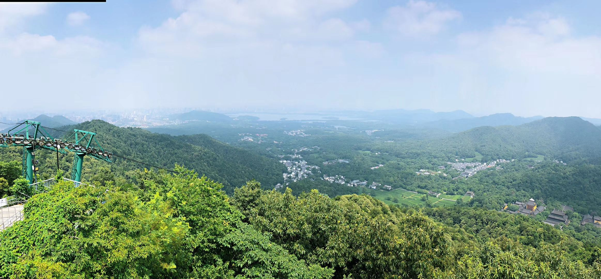

双峰插云，西湖十景之八。巍巍天目山东走，其余脉的一支，遇西湖而分弛南山、北山，形成环抱状的名胜景区，两山之巅即南高峰和北高峰。
南高峰与北高峰，地势高耸俯瞰西湖，流云霞鹤，气象万千，古时均为僧人所占。山巅建佛塔，遥相对峙，迥然高于群峰之上。春秋佳日， 岚翠雾白，塔尖入云，时隐时显，远望若仙境一般。南高峰、北高峰，是古时候西湖群山中喧盛一时的佛教名山，山顶都建有佛寺、佛塔。 春秋佳日，岚翠雾白，塔尖时隐时显，自西湖舟中远观，景观独标一格。南宋时，两峰插云成名并跻身西湖十景之列。
《西湖梦寻》里张岱说道：
“北高峰在灵隐寺后，石磴数百级，曲折三十六湾。上有华光庙，以祀五圣。山半有马明王庙，春日祈蚕者咸往焉。峰顶浮屠七级，唐天宝中建， 会昌中毁；钱武肃王修复之，宋咸淳七年复毁。此地群山屏绕，湖水镜涵，由上视下，歌舫渔舟，若鸥凫出没烟波，远而益微，仅规其影。西望罗 刹江，若匹练新濯，遥接海色，茫茫无际。张公亮有句：“江气白分海气合，吴山青尽越山来。”诗中有画。郡城正值江湖之间，委蛇曲折，左右映 带，屋宇鳞次，竹木云蓊，郁郁葱葱，凤舞龙盘，真有王气蓬勃。山麓有无着禅师塔。师名文喜，唐肃宗时人也，瘗骨于此。韩侂胄取为葬地，启 其塔，有陶龛焉。容色如生，发垂至肩，指爪盘屈绕身，舍利数百粒，三日不坏，竟荼毗之。”。
苏轼《游灵隐高峰塔》诗云：
言游高峰塔，蓐食始野装。火云秋未衰，及此初旦凉。
雾霏岩谷暗，日出草木香。嘉我同来人，又便云水乡。
相劝小举足，前路高且长。古松攀龙蛇，怪石坐牛羊。
渐闻钟馨音，飞鸟皆下翔。入门空无有，云海浩茫茫。
惟见聋道人，老病时绝粮。问年笑不答，但指穴梨床。
心知不复来，欲归更彷徨。赠别留匹布，今岁天早霜。
康与之的《长相思·南高峰》
南高峰，北高峰，一片湖光烟雾中，春来愁杀侬。
郎意浓，妾意浓，油壁车轻郎马骢，相逢九里松。
南高峰在南北诸山之界，羊肠佶屈，松篁葱蒨，非芒鞋布袜，努策支筇，不可陟也。塔居峰顶，晋天福间建，崇宁、乾道两度重修。元季毁。 旧七级，今存三级。塔中四望，则东瞰平芜，烟销日出，尽湖中之景。南俯大江，波涛洄洑，舟楫隐见杳霭间。西接岩窦，怪石翔舞，洞穴邃 密。其侧有瑞应像，巧若鬼工。北瞩陵阜，陂陀曼延，箭枥丛出，麰麦连云。山椒巨石屹如峨冠者，名先照坛，相传道者镇魔处。峰顶有钵盂 潭、颖川泉，大旱不涸，大雨不盈。潭侧有白龙洞。
道隐《南高峰》诗：
南北高峰两郁葱，朝朝滃浡海烟封。
极颠螺髻飞云栈，半岭峨冠怪石供。
三级浮屠巢老鹘，一泓清水豢痴龙。
倘思济胜烦携具，布袜芒鞋策短筇。
《西湖志》中也记载：
“南高峰高一千六百丈，上有塔，晋天福中建，今下级尚存，塔下有小龙井；北高峰石蹬数万级，曲折三十六弯，唐天宝中建浮屠七层于顶”。 这首词，着重写以写西湖的南北两高峰为主的湖光山色。俗有“上有天堂，下有苏杭”，而杭州著名一景，便是“双峰对峙”。宋初的潘阆在 《忆余杭》词中有“长忆高峰，峰上塔高尘世外”；“举头咫尺疑天汉，星斗分明在身畔”之句。形成了层峰簇岚，挺拔突起，咫尺天汉， 星辰可摘的奇观，成了人们最喜欢的伫足之地。借南北高峰、东西两涧的湖光山色，又直抒情怀，把男女主人公情深意浓的爱恋刻划得真挚 感人，有词意，有韵味，而且感情真挚。
圆明园双峰插云位于福海西北岸平湖秋月景区内。平湖秋月殿东面有一座吊桥，福海的大型游船都是从此口进入北面的大船坞停靠的。桥的 东端高台之上建有一座重檐攒尖顶木亭，亭外悬挂乾隆御笔“两峰插云”匾，与杭州西湖“两峰插云”同名，是圆明园内西湖十景之一。每到九 九重阳节，此处是帝后登高之处。